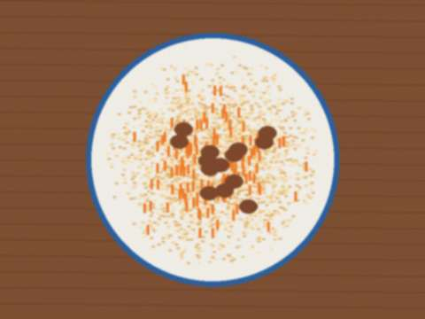

Jan262008
Saturday, January 26th, 2008 at 7:20 pm by Zarina
This winter we eat a lot of what the aid people bring. Big tins of beef, flour in white sacks with letters, beans, tomato paste in a tin. The people from the United Nations are in the city since October, and at the first week everybody laughed about the blue helmets, "kök kaska". Then somebody's aunt made a soup from the aid, and now the soup has the same name.
Ingredients (6 people):
- 1 tin beef (the big one) or 400g any beef
- 2 cups flour for noodles, water, salt
- 1 tin beans
- 2 spoons tomato paste
- 2 onions
- potato if you have
- black pepper, dried tarragon from the cupboard
Instructions: Fry onion, add tomato paste, add the beef from the tin with the jelly. Water. Add potato. Make the noodles with flour, roll thin, cut in squares, throw into the boiling soup. At the end beans. Taste it. It needs more salt and more pepper, always.
It is not good food, but it is warm and everybody's grandmother remembers this winter. My nephew who is 8 asks for kök kaska on his birthday. This is how history becomes a recipe.
Posted in Soups | 2 Comments »
Jul292007
Sunday, July 29th, 2007 at 8:10 pm by Zarina
I did not write for seven weeks. Many of you sent me e-mails to ask, thank you, I could not answer, Attelkom was down and then the electricity, and then I did not want to write.
We are alright. My family is alright. We stayed at home, in the cellar for some nights, my sister and her children came to us from the other district. Dilnoza brought us flour when we had none. The shop opened last Tuesday for two hours and the queue was to the corner.
I will not write about what happened. I will write about food, because food is what I know. Please be patient, the recipes will come but small ones, with what is in the house.
Posted in News | 3 Comments »
Apr142007
Saturday, April 14th, 2007 at 4:30 pm by Zarina
Spring is here and in the mountain villages the old women come to the Bazar-i Kalan with big bags of green. Nettles, sorrel, wild garlic. Winter is over, the body wants vitamins. My grandmother calls this soup "the first green".
Boil broth (mutton bones), add a handful of rice, one potato. At the end throw the washed nettles and sorrel for 3 minutes only. A spoon of suzma on top, an egg cut in half. It is sour and green and it tastes like the end of the cold. You can use spinach if you live in Ohio, Jen :)
Posted in Soups | No Comments »
Dec102006
Sunday, December 10th, 2006 at 11:20 pm by Zarina
No recipe today. This week was very strange for all Talas, you know why. The Americans left on the 3rd, then on the 9th the new flag, and for a week the neighbours came in and out of my kitchen like it is a railway station. Nobody could sit alone.
I made the big pot of plov on Saturday for everybody in the stairwell and 31 persons ate, I counted. Aunt Maria brought bread, Dilnoza brought her husband and her tea. Nobody said anything about the politics, we talked about weddings and prices and whose son goes to study. I think this is how we are good at: we feed each other and wait.
Jen, thank you for the e-mail, we are fine. Please tell your sister Beth too. She cooked my plov in her kitchen in the Cottonwood Estates and sent me the photo, I laughed and cried both.
Posted in News | 3 Comments »
Sep92006
Saturday, September 9th, 2006 at 6:45 pm by Zarina

The big plate at my cousin's husband family, Chatkal side. 12 people, 1 plate.My cousin's husband is from a village near Chatkal and when his family cooks beshbarmak it is like a small holiday. Name means "five fingers", you eat it with hands. Many people ask me can I use horse meat like in Kazakhstan or Kyrgyzstan. NO, I wrote already at the top of the page, we never do. In Irad it is beef or mutton.
Ingredients (8 people):
- 2 kg beef on the bone
- 500g flour for wide noodles (flat squares, size of a palm)
- 5 onions
- salt, black pepper, bay leaf
- the broth, sorpa, served in bowls
Instructions: Boil meat 2.5-3 hours with salt and bay leaf, foam away. Take the meat out, cut. Boil the noodles in the same broth. Put noodles on the big plate, meat on the top, onion rings which were boiled 2 minutes in the broth. Sorpa in bowls with a lot of black pepper. The oldest man cuts the meat and gives first piece to the oldest guest. I did not understand this rule when I was small and I took the biggest piece. They still laugh.
Posted in Main dishes | 1 Comment »